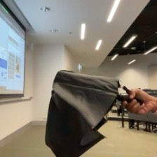
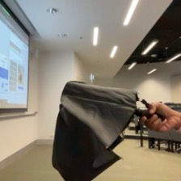

<tf.Tensor: shape=(800,), dtype=int64, numpy=
array([ 13, 26, 51, 10, 2, 258, 224, 6, 4, 170, 10, 2, 414,
6, 4, 571, 978, 29, 2, 29, 575, 6, 4, 196, 1, 36,
53, 212, 67, 240, 56, 16, 22, 874, 38, 47, 188, 1, 36,
53, 212, 67, 240, 56, 16, 22, 183, 38, 4, 683, 1, 46,
242, 2, 158, 196, 22, 3, 112, 7, 77, 19, 4, 619, 447,
556, 2, 90, 49, 3, 211, 65, 190, 57, 2, 46, 248, 3,
404, 7, 60, 37, 52, 177, 256, 86, 28, 2, 62, 6, 2,
26, 9, 4, 406, 977, 1, 1, 3, 70, 28, 2, 29, 99,
123, 10, 16, 95, 316, 12, 2, 242, 5, 427, 274, 48, 159,
56, 21, 15, 4, 314, 346, 1, 3, 81, 10, 16, 36, 164,
2, 126, 29, 195, 48, 605, 5, 330, 77, 72, 2, 110, 194,
236, 9, 246, 83, 21, 34, 9, 197, 2, 56, 83, 11, 139,
4, 179, 8, 19, 1, 394, 1, 164, 2, 29, 35, 2, 124,
9, 70, 10, 2, 414, 6, 2, 29, 10, 1, 5, 2, 164,
179, 8, 15, 173, 2, 29, 7, 71, 2, 44, 6, 9, 19,
83, 44, 21, 251, 75, 85, 66, 5, 134, 58, 10, 2, 29,
7, 37, 75, 73, 59, 5, 84, 2, 11, 6, 9, 4, 1,
61, 386, 5, 118, 10, 282, 263, 1, 322, 935, 290, 12, 791,
300, 468, 489, 7, 1, 17, 3, 18, 41, 117, 5, 684, 150,
1, 28, 2, 62, 6, 2, 26, 17, 50, 20, 72, 2, 110,
435, 17, 39, 454, 1, 5, 500, 41, 56, 64, 70, 27, 1,
37, 5, 330, 72, 17, 139, 2, 179, 237, 410, 17, 345, 139,
15, 698, 2, 29, 7, 17, 1, 12, 97, 17, 3, 27, 221,
10, 2, 26, 2, 14, 32, 25, 12, 9, 3, 23, 13, 8,
30, 78, 2, 16, 135, 21, 42, 6, 111, 16, 2, 14, 40,
3, 23, 34, 4, 11, 93, 185, 1, 142, 1, 2, 89, 103,
23, 5, 9, 291, 47, 1, 518, 576, 17, 782, 145, 1, 2,
29, 7, 27, 70, 34, 189, 34, 2, 164, 179, 8, 1, 2,
46, 1, 2, 11, 6, 15, 4, 1, 61, 10, 282, 263, 3,
496, 41, 760, 551, 12, 4, 982, 318, 28, 2, 62, 6, 2,
26, 17, 3, 18, 41, 117, 115, 35, 156, 72, 2, 26, 51,
17, 50, 17, 3, 81, 10, 16, 100, 34, 2, 46, 110, 194,
236, 17, 654, 2, 8, 10, 2, 21, 99, 123, 39, 1, 5,
56, 21, 7, 146, 2, 29, 17, 1, 34, 2, 8, 351, 83,
56, 7, 92, 10, 2, 414, 6, 2, 29, 17, 510, 64, 159,
27, 149, 9, 17, 162, 139, 2, 179, 8, 19, 83, 394, 7,
1, 18, 116, 17, 173, 2, 29, 17, 595, 334, 122, 7, 3,
168, 5, 118, 954, 180, 28, 4, 650, 1, 2, 14, 32, 25,
12, 15, 3, 23, 54, 8, 132, 35, 186, 67, 78, 21, 16,
135, 2, 14, 40, 3, 27, 23, 5, 13, 8, 2, 89, 103,
23, 5, 13, 8, 291, 218, 231, 17, 209, 5, 138, 2, 164,
179, 8, 34, 189, 34, 4, 509, 483, 17, 539, 2, 54, 11,
281, 56, 335, 672, 2, 1, 10, 2, 164, 2, 29, 1, 34,
4, 333, 7, 50, 20, 2, 79, 8, 39, 2, 1, 5, 239,
41, 56, 64, 70, 1, 72, 17, 452, 41, 179, 8, 164, 17,
454, 62, 5, 500, 41, 56, 108, 41, 8, 821, 2, 29, 64,
70, 1, 17, 109, 50, 20, 2, 81, 8, 76, 27, 1, 2,
179, 8, 302, 116, 134, 58, 0, 0, 0, 0, 0, 0, 0,
0, 0, 0, 0, 0, 0, 0, 0, 0, 0, 0, 0, 0,
0, 0, 0, 0, 0, 0, 0, 0, 0, 0, 0, 0, 0,
0, 0, 0, 0, 0, 0, 0, 0, 0, 0, 0, 0, 0,
0, 0, 0, 0, 0, 0, 0, 0, 0, 0, 0, 0, 0,
0, 0, 0, 0, 0, 0, 0, 0, 0, 0, 0, 0, 0,
0, 0, 0, 0, 0, 0, 0, 0, 0, 0, 0, 0, 0,
0, 0, 0, 0, 0, 0, 0, 0, 0, 0, 0, 0, 0,
0, 0, 0, 0, 0, 0, 0, 0, 0, 0, 0, 0, 0,
0, 0, 0, 0, 0, 0, 0, 0, 0, 0, 0, 0, 0,
0, 0, 0, 0, 0, 0, 0, 0, 0, 0, 0, 0, 0,
0, 0, 0, 0, 0, 0, 0, 0, 0, 0, 0, 0, 0,
0, 0, 0, 0, 0, 0, 0, 0, 0, 0, 0, 0, 0,
0, 0, 0, 0, 0, 0, 0, 0, 0, 0, 0, 0, 0,
0, 0, 0, 0, 0, 0, 0])>
 
 


{kind=link}